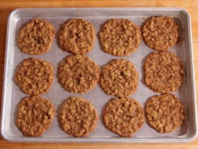

Oatmeal
Ingredients
- 2 cups packed dark brown sugar
- 1 cup (2 sticks) salted butter, softened
extract
all purpose flour
soda
oats
Preheat the oven to 350° F.
In the bowl of an electric mixer (or using a hand mixer), beat together the brown sugar and butter until fluffy. Beat in the vanilla. Add the eggs one at a time, scraping the bowl after each one.
Mix together the flour, salt and baking soda in a medium bowl. Add it into the creamed mixture in 2 to 3 batches, mixing until just combined. Mix in the oats until just combined.
Use your preferred size cookie scoop (or a regular spoon) to drop portions of dough onto baking sheets, spacing them a couple inches apart. Bake until dark and chewy, 12 to 13 minutes. If you'd like a crispier cookie, just cook a little longer!
Let the cookies cool slightly on the baking sheets, then transfer onto a plate for serving.
Add 1/2 cup finely chopped nuts to the flour mixture if you'd like a nutty flavor and crunch.

Directions